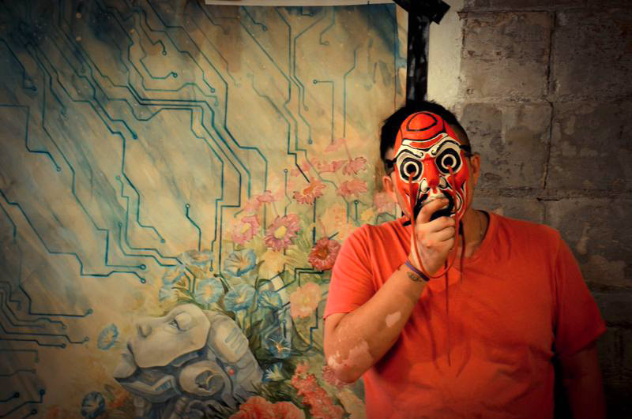
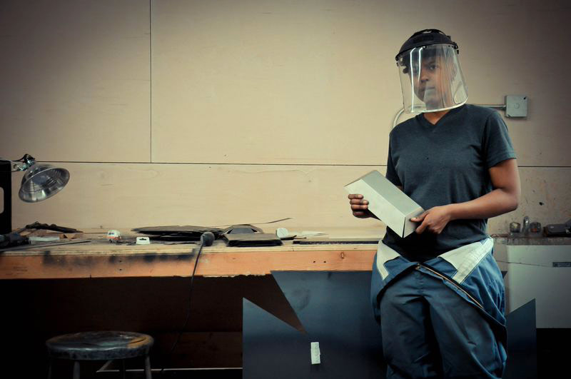
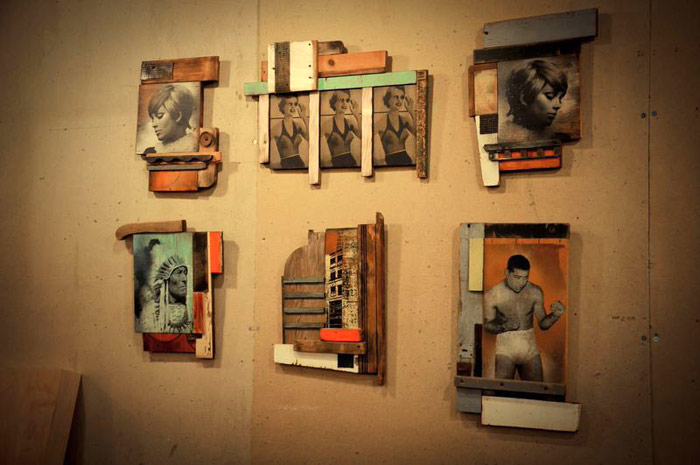

Red Bull House of Art: Anthony Lee, Chad Davis and Tiff Massey
The Red Bull House of Art is an arts incubator inviting artists of different backgrounds and art interests to become resident artists in Detroit. Originally started in Brazil, The Red Bull House of Art in Detroit gives eight emerging artists the space and tools to cultivate their craft in a 12 week residency. The space also doubles as a gallery, hosting one of the largest art parties and exhibits in Detroit at the end of each resident artist cycle, the next of which will be July 25th.
We chatted with three of the local artists working at the studio, learned more about their work, and their experience in the Detroit arts scene.
Anthony Lee is a young emerging artist exploring robots in his work and how technology and humanity operate in nature and move throughout the world that we live in. Detroit has been a place to him to explore different obsessions and find his voice as an artist at the Red Bull House of Art.
amfm: What do you love about Detroit and the whole rebirth, especially with the arts scene?
lee: Mostly in particular most of the artists are so ready to work with each other. There’s so much room for experimenting and everyone is down to work with a total stranger and grow with each other. I got my my first art exhibits in venues were given to me by just normal people in Detroit. They just gave me an opportunity. I was just some dude from the suburbs who didn’t know anything about Detroit and they gave me a chance.
amfm: So as an emerging artist trying to grow and trying to find your place in your art and as a resident artist here, how has that process been going?
lee: My process has been a very internal process, because I’m trying to make something that’s very appealing to people, that gives them some grit and also that feeds their soul. At the same time, I’m trying to make something that’s sincere to myself as well and not have money dictate the quality. I’m still finding my way!

Tiff Massey is a Detroit artist working with metalsmithing and fiber wearable sculptures inspired by traditional African hairstyles and customs. Her work deals largely with the intersections of race, culture, and the Detroit experience
amfm: How did you get into making art, had you always had an interest in art?
massey: In high school I had a couple classes, and in undergrad I studied Biology, so I have a Biology degree. To break up the monotony I would take Metals. Then I graduated and it kind of spoke to me. I would sneak out of the lab and go to the metal studio, so if that doesn’t speak louder than words, I switched gears. I got my Masters at Cranbook Academy of Art, and since then I’ve just been making mad work.amfm: How do you feel about the detroit art scene and how it’s evolved?
massey: A lot of people come here for publicity stunts, and arent really trying to immerse themselves in the culture which can be problematic as well. I feel like if you are going to come here and you’re going to immerse yourself in what Detroit is doing and new possibilities, I feel like you should immerse yourself in the community, see what’s going on, see how you can be an asset and a member and help out. That’s what Detroit needs.

Chad Davis takes old things, reimagines them and makes them new. Inspired by 50’s and 60’s popular culture and found objects of urban decay. There couldn’t be a greater metaphor for how his art relates to the revitalization of Detroit, one of his biggest inspirations.
amfm: Where does your inspiration come from? Why the interest in collage?davis: I try to use primarily found objects, forgotten images, and bring new life into them and juxtapose them together, working with textures of the material, wood, metal, sometimes plastics, and put them together and take something old and make something new out of them.
amfm: What do you think about Detroit and the whole rebirth of the arts here?
davis: I think it’s really great, I think it’s really taken shape in the last couple of years. There’s more galleries downtown. There’s more community based projects. There’s just a revitalization of it as a whole whether it’s street art and graffiti or commissioned murals or sculptures, and it kind of plays in with the music scene. It’s definitely on the rise.
photo credits: red bull house of art (masthead), amanda contreras